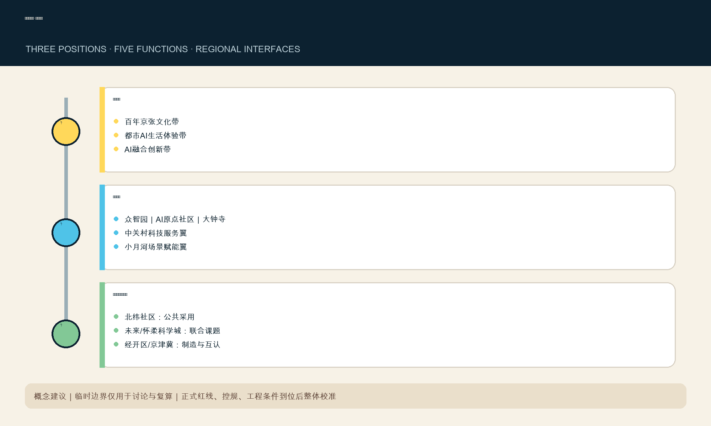
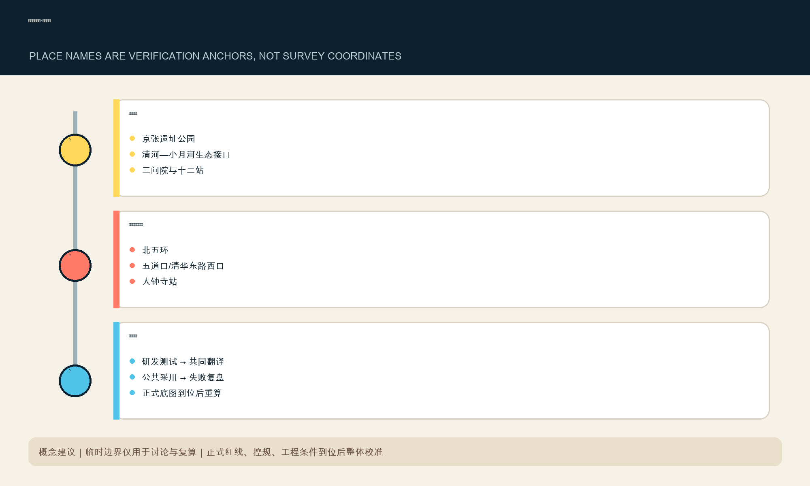
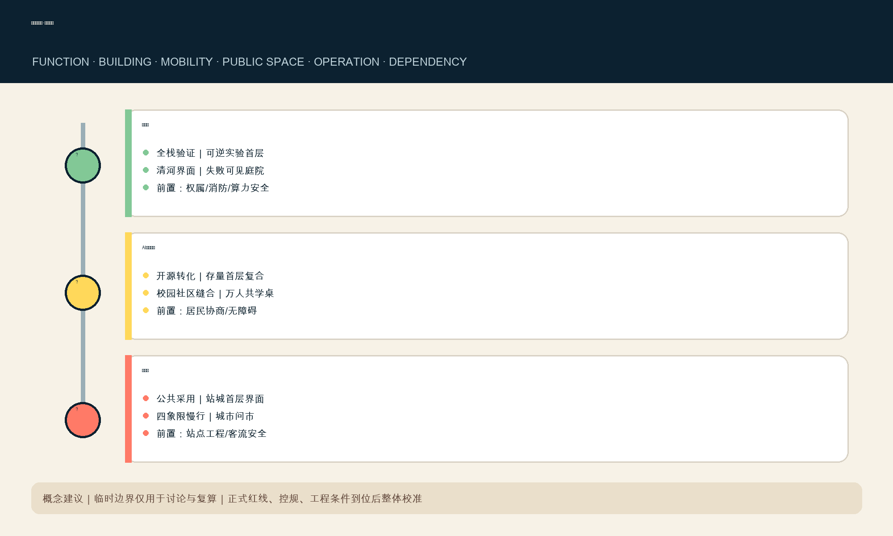
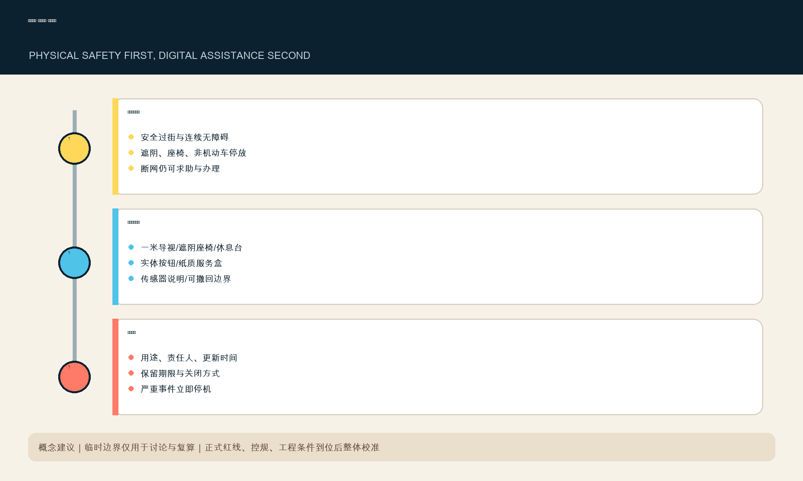
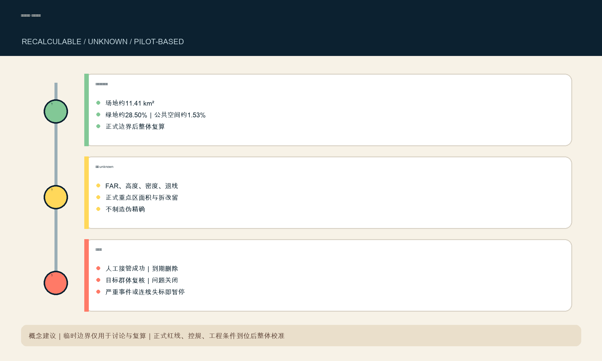

证据驱动修订｜不声称官方边界｜无远程资产
概念建议：临时几何仅用于生成、讨论与复算；不作为正式红线、控规或实施承诺。
统筹研究、总体设计和重点区域分别回答不同深度。
真实地名只作核验索引；临时边界不是官方结论。
三处重点区分别表达功能、建筑、交通、公共空间、运营和依赖。
先修物理安全，再使用数字辅助；断网仍可服务。
最小数据、人工接管、投诉删除和停机门槛。
十个工作包由责任、KPI、人工复核和准入门推进。
23项任务逐项映射；确定性、空间和专业证据链分别复核。
正式来源支撑任务；临时几何、未知控规和未参与事实保持显著。




